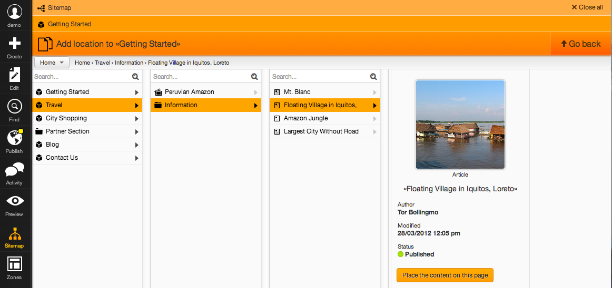

A fresh and modern CMS interface built on top of eZ Publish
Ensure dependencies are met:
prefork modeInstall extension into /my/ez/extension/ezexceed
cd /my/ez/extension
git clone git@github.com:KeyteqLabs/ezexceed.git
cd ezexceedeZ Exceed is currently only available as an extension. If you are running on eZ Publish 5, you have to enable legacy mode and install the eZ Exceed extension in your /ezpublish_legacy/extension/ folder.
Run the included SQL script to add eZ Exceed specifics to your database
mysql -h host -u user -D my-database-name -p < sql/mysql/schema.sqlActivate the eZ Exceed extension along with its SiteDesign in every siteaccess where you want eZ Exceed enabled. In siteaccess/yourdesign/site.ini.append.php:
# Activates the extension itself:
[ExtensionSettings]
ActiveAccessExtensions[]=ezexceed
# Activate eZ Exceed's design; toolbars and overlays:
[DesignSettings]
AdditionalSiteDesignList[]=ezexceedClear your caches and refresh!
Only keep the ContentTypes relevant for your site. Either move the ones you don't use out of the ContentTypeGroup Content, or delete them altogether. Less complexity gives better usability and thus faster editing.
Put content you want the editor to be able to edit inside the ContentTypeGroup Content – it will then get a more prominent place in the design. Put ContentTypes that are used in a technical manner, for settings or otherwise, inside a ContentTypeGroup of its own to hide it. This makes for a clearer interface for the editor.
In order to make it even easier to identify the different ContentTypes and tell them apart, assign unique icons to them. Unique icons for each ContentType makes for a much clearer interface, and editors will be more efficient if you set an icon, so please do.
Create or edit the global settings/override/icon.ini.append.php:
[ClassIcons]
ClassMap[recipe]=Food.png
ClassMap[cookbook]=Book.png
ClassMap[pin]=Pushpin.pngTake care in naming FieldDefinitions, descriptions and states. Make it crystal clear and easy to understand. This makes up a good part of the experience – make it great.
In order to make the Content edit layout tighter and more user friendly, consider editing contenteditor.ini.append.php inside the eZ Exceed extension to make many or most of the FieldDefinitions use only half of the available width and thus
render side by side other less space consuming FieldDefinitions:
[ByType]
fieldid=half
# or
[ByClassIdentifier]
contentclass[fieldname]=halfMake the attributes order follow the order it displays on the page. E.g a footer text FieldDefinition should reside at the bottom of the edit area, if it sits at the bottom of the page. This is called 'cognitive mapping' and makes it easy for the editor to relate to the Content she's editing.
Group FieldDefinitions (e.g meta information) enabling the editor to open or close a group of FieldDefinitions. Another example for grouping is global attributes, e.g footer information, or other static information. You can create FieldDefinitionGroups
in override/content.ini.append.php:
[ClassAttributeSettings]
CategoryList[footer]=Footer fieldsChange the default typeface inside the text editor to the same typeface used in the site's design. To do this, override content.css inside the TinyMCE iframe. This creates a better connection between the site being edited and the edit
area.
eZ Exceed provides a better way to link to Locations – not only Contents. This is an editor plugin, and needs to be activated in the override settings, in override/ezoe.ini.append.php:
[EditorSettings]
Plugins[]=ezexceedlink
[EditorLayout]
Buttons[]=ezexceedlinkIn order to make it possible for anyone to preview a user's draft, the desired groups of users must be granted access to eZ Exceed's preview module. The following INI setting must also be set in order to make it work:
[eZExceedPushNotification]
SignKey=<yoursignkey>Contact Keyteq to obtain your SignKey.
To be able to send Push Notifications to the users' iOS devices, you need both an ID and a SignKey. Contact Keyteq to obtain this info.
Create or edit ezexceed.ini in the level that suit your needs best – override or siteaccess. Add the following block:
[eZExceedPushNotification]
SignKey=<yoursignkey>
ID=<yourid>Make sure that JavaScript support is enabled in your web browser.
Note: IE 8 & 9 are only supported functionally; issues that only cause visual artifacts will not be prioritized unless they're easy to fix and does not limit the capabilities of modern browsers.
Keeping your install outside of root (/) can cause errors inside the eZ Online Editor (ezoe).
You do not have to disable the extension, but we do not support editing of the eZ Tags Field yet.
If you're running eZ Publish 5, Deactivate your eZ Form token legacy extension.
If the eZ Demo design has higher priority than the eZ Exceed design it will overwrite, and break, the datetime FieldType.
There are a few important concepts in eZ Exceed you need to grasp in order to use it, implement for it and customise it.
The main interaction pattern in eZ Exceed is the stack:

The stack allows editors to work with layered content without leaving the initial context. As the example screenshot shows the stack has a context path with Sitemap -> Object edit -> Add location and it makes it easy to see this breadcrumb as
well as jump in it.
The uniqueness of the stack is that everything you try to do in eZ Exceed simply opens a new level in the stack, meaning you never leave the page and have to juggle multiple tabs to keep sane.
When an editor clicks an action inside eZ Exceed it pushes a stack level with some UI, and when the editor is done using that stack level a context is passed back to the overarching stack level — the initiator — with enough data to store
the users interaction. For example clicking Add location pushes a Sitemap UI and it returns one, or several locationIds.
Building datatypes that support the eZ Exceed interface can require a custom design implementation for eZ Exceed. If your interface only require basic controls like input fields this is supported out of the box, but if you have custom interaction
in your datatype you are required to implement this in a custom ezexceed design.
In your content/datatype/edit/mytype.tpl you can wrap your code in a div like this in order to instruct eZ Exceed to load a javascript module:
<div class="attribute-base"
data-handler='mytype/main'
data-paths='{
"mytype" : "/extension/mytype/design/ezexceed/javascript/"
}'
data-url-root='{"/"|ezurl("no")}'>
<!-- My attributes markup -->
</div>The previous code basically instructs eZ Exceed to load a javascript module named mytype/main.js using Require.js. We will get to how you need to implement this javascript module in a second.
We build JavaScript modules for eZ Exceed using Backbone.js and your handler needs to extend / or quack like the module edit/datatypes/base:
define(['edit/datatypes/base'], function(Base)
{
return Base.extend({
render: function() { return this; },
parseEdited: function() { return []; }
});
});There are two methods you must implement to ensure your handler will work:
This method will be called when its time for your GUI to display itself
This method is called when autosave is triggered for your attribute, and it needs to return exactly what should be sent to the content/save module in eZ
You can submit issues in our GitHub project, but make sure you've read our contributor documentation
We are very interested in simple translation pull requests to cover the most important languages:
Contributing with Pull Requests for bug fixes and / or new features is very welcommed, but please make sure you've read our contributor documentation. If you are adding new, or changing existing functionality, please register this as an issue before you start coding so you know that the patch will be accepted before you undergo a lot of work.
Technologies used in eZ Exceed include, but are not limited to:
This most likely implies you are running eZ Publish 4.6 where previews of unpublished content is not supported
Ensure that your pagelayout template is rendering the toolbar. This is only necessary if you are overriding with your own custom pagelayout (eZ Publish 4.x) or if you are running eZ Publish 5.x.
{include uri="design:parts/website_toolbar.tpl" current_node_id=$module_result.node_id}{% ez_legacy_include "design:parts/website_toolbar.tpl" with {
'current_node_id': app.request.attributes.get('locationId')
} %}Also, your editor users need the right set of permissions and policies. We do not require any special permissions over what eZ Publish would normally require, but do make sure the settings are indeed intact.
For a normal editor you should assign the following permissions:
content
ezoe
This should be sufficient for normal everyday use. For the best possible experience, content -> create / edit a specific subtree, as well as a limitation to the variety of ContentTypes the group in question can edit, should be specified.
This is due to how eZ Exceed supports the ezie extension. Specify your jQuery dependency through ezjscore and the
ezjsc::jquery loading strategy to solve this.
[eZJSCore]
ExternalScripts[jquery]=://ajax.googleapis.com/ajax/libs/jquery/2.0.0/jquery.min.js{ezscript_require(array('ezjsc::jquery'))}This could be due to an awkward bug in IE where only 30 stylesheets can be loaded, and any stylesheets more than that will silently not load. The simplest way to get around this is to enable the packer in ezjscore.
Turn on this in settings/override/ezjscore.ini.append.php
[eZJSCore]
Packer=enabled
[Packer]
AppendLastModifiedTime=enabled